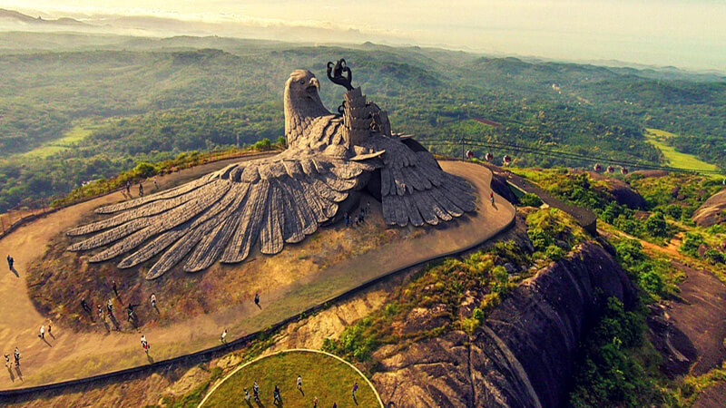

Jatayu’s Earth Centre

Spread across 65 acres of land, Jatayu Earth's Centre is a rock-themed park built to promote mythology and adventure. The world’s largest bird sculpture is the main attraction at Jatayupara Nature Park and is one among the several Kollam famous places. It has a 6D theatre, a digital audio-visual room, cable car and the Siddha Cave Healing Centre. The virtual reality museum here tells the story of Jatayu to visitors. It is also home to umpteen adventure activities including paintball, laser tag, archery, bouldering, rock climbing, air-rifle shooting, zip lining, trekking, rappelling, valley crossing
Read More...Thenmala

Thenmala is India’s first planned eco-tourism destination located in the foothills of the Western Ghats of the Kollam district which is recognised as a UNESCO World Heritage Site. Thenmala means honey hill. Thenmala is also a dam site with the Parappar Dam which spans the Kallada River. The honey collected from Thenmala forest is famous for its medicinal values. This place has facilities like winding pathways, Sway Bridge, amphitheatre, musical fountain, boating, & so on. To the east, Pathimoonam Kannara Bridge is a 13-arched bridge along a mountain railway route.
Read More...Punalur

One of the most surreal tourist spot in Kollam is Punalur that offers a rejuvenating experience and an Old World Charm. Punalur derives its name from two words in Tamil and Malayalam. ‘Punal’ in Tamil means water and the Malayalam word’ ooru’ means place, which combined together give the name Punalur or ‘place of water. Indeed Kallada flows right through the heart of the city with the famous suspension bridge hanging over it. Panalur is known as "Pepper Village of Kerala". Some of the tourist attractions are Shenthruni Forest, Palruvi and Courtallam Waterfalls.
Read More...